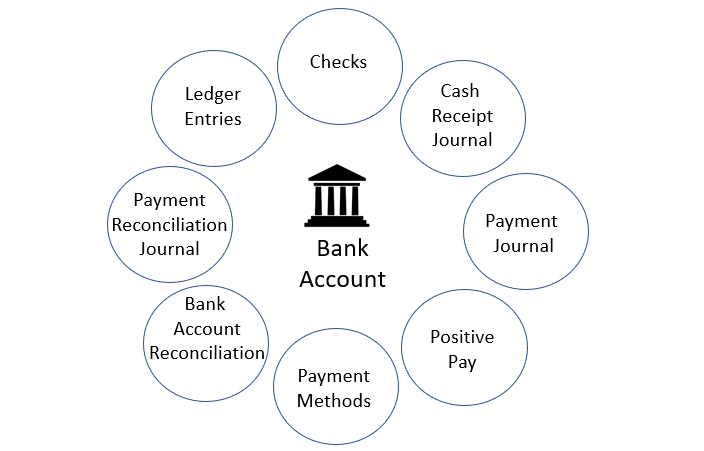
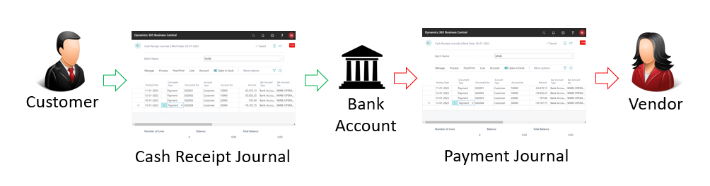
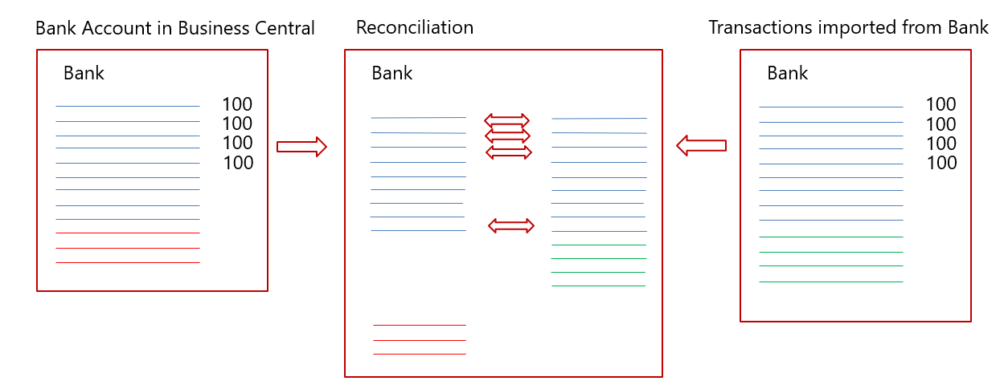

Bankkonten einrichten
Verwenden Sie Bankkonten in Business Central, um den Überblick über Ihre Bank-Transaktionen zu behalten. Konten können auf Ihre Mandantenwährung oder eine Fremdwährung lauten. Nachdem Sie Bankkonten eingerichtet haben, können Sie auch Schecks drucken. Bankkonten bieten außerdem Funktionen für Zahlungsabgleich, Bankabgleich und den Import und Export von Bankdateien.
Sie können Bankkonten in Transaktionen in der allgemeinen Erfassung einbeziehen. Jedes Bankkonto ist über die zugewiesene Buchungsgruppe für Bankkonten mit einem Konto im Kontenplan verknüpft. Die Verwendung eines Bankkontos in einer Zahlungstransaktion erstellt automatisch einen Eintrag sowohl auf dem Bankkonto als auch auf dem damit verbundenen Hauptbuch (Sachkonto).
Bankkonten funktionieren unterschiedlich, je nachdem, ob ein Währungscode angegeben ist:
Wenn keine Währungscode angegeben ist, erfolgen alle Transaktionen auf dem Bankkonto erfolgen in der Mandantenwährung (MW) der aktuellen Firma. Wenn Sie eine Transaktion auf dem Konto in einer anderen Währung durchführen, werden die Beträge basierend auf den Wechselkursen in der LW auf das Konto gebucht. Alle Schecks, die von diesem Konto ausgestellt werden, müssen in der LW ausgestellt werden. Wenn das Bankkonto in einem Journal verwendet wird, verwendet die Buchungsblattzeile automatisch den leeren Währungscode.
Wenn ein Währungscode angegeben wird, müssen alle Transaktionen auf diesem Konto und alle Schecks, die darüber ausgestellt werden, dieselbe Währung verwenden wie das Konto.
Sie können bei der Dateneingabe Zeit sparen, indem Sie ein Bankkonto als Standardkonto für die für das Konto angegebene Währung festlegen. Wenn Sie dies tun, wird das Konto den Verkaufs- und Dienstleistungsdokumenten zugeordnet, die diese Währung verwenden. Um das Konto als Standardkonto für Verkaufs- und Servicebelege festzulegen, aktivieren Sie auf der Seite Bankkontokarte den Umschalter Als Standard für Währung verwenden. Bei Bedarf können Sie ein anderes Konto auswählen, wenn Sie an einem Beleg arbeiten.
Ein Bankkonto ist ein integraler Bestandteil von Business Central und spielt bei vielen anderen Funktionalitäten eine Rolle. Die folgende Illustration zeigt die wichtigsten Beziehungen:

Die Erstellung eines Bankkontos führt dazu, dass es an allen in der Abbildung gezeigten Stellen verfügbar ist und auch im Sachkonto und auf der Seite Unternehmensdaten gespiegelt wird.
Bankkonten werden häufig täglich überwacht, um sicherzustellen, dass alle neuen Zahlungen von Kunden so schnell wie möglich registriert werden. Durch die schnelle Registrierung von Zahlungen wird sichergestellt, dass der aktuelle Status eines Debitors in Business Central widergespiegelt wird. Wenn der Status der Debitorenzahlungen auf dem neuesten Stand gehalten wird, ersparen Sie Verkäufern, Buchhaltern und anderen Mitarbeitern unnötige Anrufe wegen überfälliger Rechnungen oder Lieferverzögerungen.

Eine weitere Aufgabe besteht darin, die Zahlungen der Lieferantenwährungen mit den realisierten Sätzen zu importieren, um sicherzustellen, dass der aktuelle Status der Lieferanten auf dem neuesten Stand ist. Mit der Funktionalität Zahlungsabgleich ist das am einfachsten zu bewerkstelligen. Im Zahlungsabstimmungs Buch.-Blatt können Sie Banktransaktionen direkt aus einer Online-Bankanwendung importieren und mehr oder weniger automatisch buchen. Das Journal identifiziert und bucht die folgenden Transaktionen automatisch:
- Lastschriftzahlungen von Kunden
- Debitoren-Zahlungen von einzelnen Rechnungen
- Pauschalzahlungen von Kunden
- Debitoren-Zahlungen in Fremdwährungen
- Zahlungen von Kreditoren
- Kreditorenzahlungen in Fremdwährung
- Wiederkehrende Zahlungen von Kreditoren und Abonnements
- Bankgebühren und Zinsen
Der Zahlungsabgleich sorgt für eine erhebliche Zeitersparnis bei der Buchung von ein- und ausgehenden Zahlungen. Allerdings gelten die Transaktionen auf dem Bankkonto in Business Central erst dann als 100 % korrekt, wenn Sie einen Bankabgleich ausführen.
Mit der Bankabstimmung stellen Sie sicher, dass das Bankkonto in Business Central mit dem externen Konto bei der Bank übereinstimmt.

In der Abbildung stellt die linke Seite das Bankkonto in Business Central dar und die rechte Seite die Transaktionen, die von der Bank über die Online-Bankanwendung importiert wurden. Das Diagramm in der Mitte zeigt die Transaktionen von beiden Seiten, aus denen sich die Bankabstimmung zusammensetzt.
Vom Bankkonto in Business Central sollten die meisten Transaktionen bei der physischen Bank bekannt sein. Zu den wenigen Ausnahmen gehören die folgenden Fälle:
- In Business Central gebuchte Korrekturen
- Ausgestellte Schecks, die nicht eingelöst werden
- Kreditorenzahlungen, die noch nicht von der Bank genehmigt wurden
Vom physischen Konto bei der Bank treffen immer wieder Transaktionen ein, die nicht im Zahlungsabstimmungs Buch.-Blatt ausgewiesen sind, wie beispielsweise die folgenden Transaktionen:
- Neue Abonnements von Kreditoren
- Debitoren-Zahlungen ohne Beschreibung
- Bankzinsen
- Bankgebühren
- Kreditkartenbelastungen, die noch nicht gemeldet wurden
Je besser Sie die Informationen im Zahlungsabstimmungs-Buch.-Blatt zuordnen können, desto mehr Transaktionen werden automatisch gebucht und desto einfacher wird der periodische Bankabgleich.
Das folgende Video zeigt die grundlegenden Schritte zum Festlegen eines Bankkontos in Business Central.
Warnung
Einige Felder können sensible Daten enthalten, wie z.B. die Felder BLZ, Bankkontonr., SWIFT Code, und IBAN Code. Erfahren Sie mehr unter Sensible Felder überwachen.
Bankkonten einrichten:
- Wählen Sie die
 öffnet. Symbol. Geben Sie Bankkonten ein und wählen Sie dann den zugehörigen Link.
öffnet. Symbol. Geben Sie Bankkonten ein und wählen Sie dann den zugehörigen Link. - Wählen Sie auf der Seite Bankkonten die Aktion Neu aus.
Füllen Sie die Felder nach Bedarf aus. Fahren Sie über ein Feld, um eine Kurzbeschreibung zu lesen.
Ein Beispiel wäre das Bankkonto. Buchungsgruppe, das das Bankkonto mit dem zugrunde liegenden Sachkonto in der Bilanz verknüpft. Erfahren Sie mehr unter Buchungsgruppen festlegen.
Tipp
Einige Felder sind ausgeblendet, bis Sie die Aktion Mehr anzeigen wählen, da sie in der Regel selten verwendet werden. Andere müssen durch Personalisierung hinzugefügt werden. Erfahren Sie mehr unter Personalisieren Sie Ihren Arbeitsbereich.
Sie können so viele Bankkonten erstellen, wie Sie für Ihr Unternehmen benötigen. Für jedes Bankkonto müssen Sie Informationen angeben, die das Bankkonto eindeutig identifizierbar machen. Zu diesen Informationen gehören die geografische Adresse der Bank, Nummernserien für verschiedene Arten von Transaktionen, wie z.B. Lastschriften und Überweisungen, die Währung, in der die Beträge angegeben werden, und Informationen, die für den Import von Bankauszügen verwendet werden. Fahren Sie über ein Feld, um eine Kurzbeschreibung zu lesen.
So geben Sie einen Eröffnungssaldo ein
Um das Feld Saldo mit einem Eröffnungsbilanz auszufüllen, müssen Sie den Bankposten mit dem entsprechenden Betrag buchen. Sie buchen den Eintrag über eine Bankkontoabstimmung. Erfahren Sie mehr unter Bankkonten abstimmen.
>
Alternativ können Sie den Eröffnungssaldo als Teil der allgemeinen Datenerstellung in neuen Firmen implementieren, indem Sie die Anleitung Geschäftsdaten migrieren für die unterstützte Einrichtung verwenden. Weitere Informationen unter Bereitschaft für die Geschäftsabwicklung.
Wichtig
Buchen Sie den Eröffnungssaldo nicht direkt in das Hauptbuch. Direkt in das Sachkonto gebuchte Einträge führen in der Regel dazu, dass Sie das Bankkonto nicht abstimmen können. Bei Bankkonten in Fremdwährung führt eine Direktbuchung dazu, dass sich die Differenzen häufen, wenn Sie mehr Bankabstimmungen buchen. Normalerweise buchen Sie den Eröffnungssaldo direkt auf das Bankkonto, und der Betrag landet auf dem Sachkonto. Alternativ können Sie ihn später aus dem Sachkonto stornieren, das Sie zum Ausgleich des Eröffnungssaldos des Hauptbuchs verwenden. In jedem Fall müssen Sie jede Direktbuchung auf das Sachkonto ausgleichen, bevor Sie mit der ersten Bankabstimmung beginnen — insbesondere wenn das Bankkonto auf eine Fremdwährung lautet.
Um Ihre Bankkonten zum Importieren und Exportieren von Bankdateien einzurichten
Die Felder, die sich auf den Import und den Export von Bankfeeds und Dateien beziehen, befinden sich im Inforegister Transfer im Fenster Bankkontenkarte. Erfahren Sie mehr unter Verwendung der Erweiterung AMC Banking 365 Fundamentals und Einrichten des Dienstes Envestnet Yodlee Bank Feeds.
- Wählen Sie die Symbol, geben Sie Bankkonten ein und wählen Sie dann den entsprechenden Link.
- Öffnen Sie die Karte für das Bankkonto, für das Sie Bankdateien exportieren oder importieren möchten.
- Füllen Sie im Inforegister Übertrag die notwendigen Felder aus. Fahren Sie über ein Feld, um eine Kurzbeschreibung zu lesen.
Hinweis
Verschiedene Dateiexportdienstleistungen und deren Formaten benötigen verschiedene Einrichtungswerte auf der Seite Bankkontokarte Wenn Sie die Datei exportieren, werden Sie auf falsche oder fehlende Einrichtungswerte hingewiesen. Lesen die Kurzbeschreibungen der Felder sorgfältig durch oder gehen Sie zu den entsprechenden Verfahrensthemen. Wenn Sie beispielsweise eine Zahlungsdatei für eine nordamerikanische elektronische Überweisung (EFT) exportieren, müssen sowohl die Felder Letzte Überweisungsmitteilung Nr. als auch Zustellungsnummer ausgefüllt werden. Erfahren Sie mehr unter Zahlungen in eine Bankdatei exportieren.
Die Felder im Inforegister Transit auf dem Bankkonto dienen unterschiedlichen Zwecken, je nachdem, ob es sich um eine eingehende oder ausgehende Zahlung handelt.
Die folgende Abbildung zeigt den Arbeitsplan von eingehenden Zahlungen. Die Nummern in der Beschreibung entsprechen den Nummern in der Abbildung.
:::row::: :::column:::
- Die Transaktionen werden vom Bankkonto entweder in einem menschenlesbaren .csv-Format oder im bankeigenen Format exportiert.
- Die Data Exchange Definition ordnet die Informationen in der Datei den Feldern in Business Central zu. Erfahren Sie mehr unter Set Up Data Exchange
- Die Einrichtung für Datenexport/-import definiert den Export oder Import und verweist auf die Datenaustauschdefinition.
- Das Importformat für Bankauszüge verknüpft die Einrichtung für den Import mit dem Bankkonto.
Die Zahlungen werden über das Zahlungsausgangs Buch.-Blatt oder die Bankkontoabstimmung Seite importiert.
:::column-end::: :::column:::
:::column-end::: :::row-end:::
Eingehende Zahlungen werden immer über das Zahlungsabstimmungs Buch.-Blatt oder direkt in die Bankkontoabstimmung Seite importiert. Im Gegensatz dazu können ausgehende Zahlungen aus jedem Zahlungsausgangs Buch.-Blatt stammen. Die einzige Voraussetzung ist, dass das Feld Zahlungsexport zulassen im entsprechenden Batch des Zahlungsausgangs Buch.-Blatt markiert ist.
Die folgende Abbildung zeigt den Arbeitsplan von ausgehenden Zahlungen. Die Nummern in der Beschreibung entsprechen den Nummern in der Abbildung.
:::row::: :::column:::
- Die Transaktionen werden in ein Zahlungsausgangs Buch.-Blatt eingefügt, das für den Export von Zahlungen in eine Datei vorbereitet wurde.
- Das Importformat für Bankauszüge verknüpft die Einrichtung für den Import mit dem Bankkonto.
- Die Einrichtung für Datenexport/-import definiert den Export oder Import und verweist auf die Datenaustauschdefinition.
- Die Data Exchange Definition ordnet die Informationen in der Datei den Feldern in Business Central zu. Mehr dazu erfahren Sie unter Data Exchange festlegen
Die Zahlungen werden aus der Erfassung des Zahlungsausgangs Buch.-Blatt exportiert und in das Bankkonto importiert.
:::column-end::: :::column:::
:::column-end::: :::row-end:::
Um Ihre Bankkonten zum Importieren und Exportieren von Bankdateien einzurichten
Die Felder auf dem Inforegister Überweisung auf der Seite Kreditoren Bankkontonummer beziehen sich auf den Export von Bankfeeds und Dateien. Erfahren Sie mehr unter Verwenden Sie die Erweiterung AMC Banking 365 Fundamentals und Zahlungen in eine Bankdatei exportieren.
- Wählen Sie das Symbol Symbol. Geben Sie Kreditoren ein und wählen Sie dann den zugehörigen Link.
- Öffnen Sie die Karte für den Kreditor.
- Wählen Sie die Bankkonten Aktion aus.
- Wählen Sie aus der Liste der Kreditorenbankkonten das entsprechende Bankkonto aus, oder fügen Sie ein neues Bankkonto hinzu, indem Sie Neu auswählen.
- Füllen Sie auf der Seite Kreditoren-Bankkontokarte die Felder nach Bedarf aus. Fahren Sie über ein Feld, um eine Kurzbeschreibung zu lesen.
Tipp
Einige Felder sind ausgeblendet, bis Sie die Aktion Mehr anzeigen wählen, typischerweise weil sie selten verwendet werden. Andere müssen durch Personalisierung hinzugefügt werden. Weitere Informationen finden Sie unter Personalisieren Sie Ihren Arbeitsbereich.
Warnung
Einige Felder auf dem Bankkonto des Kreditors enthalten sensible Geschäftsdaten, z. B. die Felder BLZ, Bankkontonr., SWIFT Code und IBAN Code. Weitere Informationen zur Überwachung und Benachrichtigung, wenn ein Wert in diesen Feldern geändert wird, finden Sie unter Sensible Felder überwachen.
Ändern Ihres Bankkontos
Um ein anderes Bankkonto für Ihr Unternehmen zu verwenden, müssen Sie das neue Bankkonto in Business Central erstellen. Wir empfehlen, dass Sie nicht einfach die Informationen über das derzeit verwendete Konto ersetzen, da dies zu falschen Daten führen kann. Zum Beispiel könnte Ihr Eröffnungssaldo falsch sein oder Ihr Bankfeed nicht mehr richtig funktionieren. Es ist wichtig, dass Sie das aktuelle und das neue Konto getrennt halten.
Nachdem Sie das neue Bankkonto erstellt haben, sollten Sie auch eine neue Bankbuchungsgruppe erstellen und diese einem neuen Hauptbuch-Konto zuordnen. Sie können eine bestehende Bankbuchungsgruppe wiederverwenden und die Transaktionen werden auf dieselben Hauptbuch-Konten gebucht wie auf andere Bankkonten, die sich diese Buchungsgruppe teilen. Wir empfehlen jedoch, eine neue Bankbuchungsgruppe und ein neues Hauptbuchkonto zu erstellen, damit die Abstimmungen einfacher zu erledigen sind.
Hinweis
Denken Sie daran, dass die Bankkontoinformationen auf offenen Verkaufsrechnungen immer noch das ursprüngliche Bankkonto anzeigen. Dementsprechend werden Zahlungen wahrscheinlich immer noch auf dieses Konto gebucht. Wir empfehlen Ihnen, beide Konten nach der Änderung noch eine Zeit lang aktiv zu halten.
Um eine komprimiertere Ansicht Ihrer Geldkonten in der Finanzberichterstattung zu erhalten, verwenden Sie die Beginn-Summe und Ende-Summe Konten in Ihrem Kontenplan, die Summen Zeilen in Finanzberichten oder Sachkonto-Kategorien. Erfahren Sie mehr im Abschnitt Business Intelligence und Financial Reporting.
Siehe auch
Einrichten von Banken
Einrichten von Buchungsgruppen
Abstimmen von Bankkonten
Den Envestnet Yodlee Bank Feeds Service einrichten
SEPA-Lastschrift in Business Central
Um Ihr Bankkonto für SEPA-Lastschrift festzulegen
Um ein Bankkonto für SEPA-Überweisung festzulegen
Zahlungen mit der Erweiterung AMC Banking 365 Fundamentals oder SEPA-Überweisung vornehmen
Zahlungsabstimmung
Verständnis der Fibu und des COA
Arbeiten mit Business Central
Kostenlose E-Learning-Module für Business Central finden Sie hier